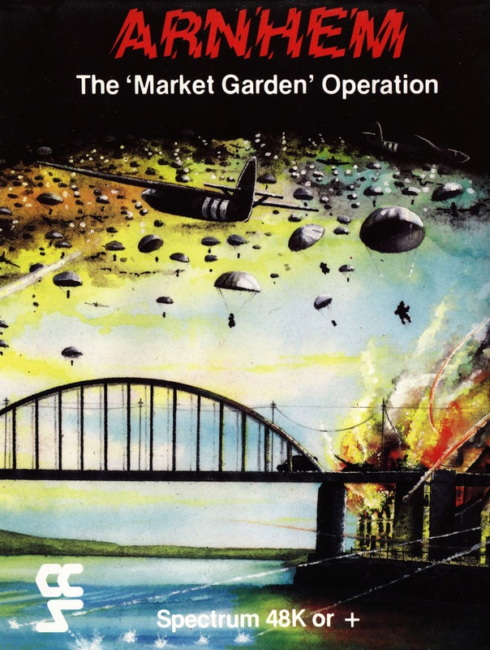
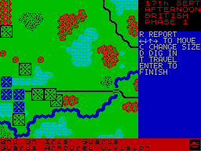
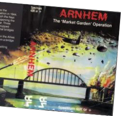

Arnhem


{kind=link}

| Publisher: | CCS |
| Price: | £8.95 |
| Year: | 1985 |
| Source: | CRASH, Issue 17 |

Oh no! I thought, when I got this one out of its jiffy bag. Can it possibly be true? Perhaps the lavish praise I’ve been heaping on CCS of late has gone to their heads! Maybe they have taken on a new marketing manager (horror of horrors) to actually start getting their stuff into shops and weird things like that. The reason I’m wondering about all this is because Arnhem, the latest from CCS, comes in a big box — in fact the same size vinyl pack as Alien by Argus (here’s a possibility for you, boys) with a full-colour painted cover and a sixteen-page booklet with a fold-out map of the playing area.
The cover picture is a little bit dodgy, but the overall effect of the packaging is very impressive. No more inlay cards that fold out eighteen times! No more miniscule print! Eee, luxury.
The program is pretty good, too. You know how I was always moaning about coordinate-controlled movement? Well, they’ve finally got rid of it, and bought in cursor control. The game is very slick, as strategy games go; for example, as you finish doing what you want with one unit, you are moved on immediately to the next eligible unit. You don’t actually have to do anything with the unit — if you don’t want to, there’s a ‘pass’ feature — but it’s a nice touch, not having to do all the donkey work in between moves.

There are five scenarios, increasing in difficulty and length (in playing turns) from seven turns (which takes about an hour) to 26 turns (which apparently takes eight to ten hours)! The scenarios progress through the physical playing area, which is a long thin strip, roughly 30 x 100 units, with the first (easiest) being the approach to Eindhoven, the fourth being the assault on Nijonegen and Arnhem, and the fifth being all four previous scenarios rolled into one. The object of each scenario is quite specific; in the first you have to clear the main road to Eindhoven of Huns, and if you don’t succeed in doing this you lose, even if you’ve wiped out the vast majority of the Krauts in trying. The other objectives tend to be fairly similar, capturing bridges and so on.
When you start playing the game you are presented with a fairly large (20 x 20) map window, an identification of which unit is to go, and a menu of options for that unit. The units are represented on the map as squares with symbols in them. Each unit initially covers an area 2 x 2, but it can be put into a component mode, which gives faster travelling, but makes the unit more vulnerable to attack. ‘Compacted’ units cover only one map square. The map graphics are remarkably clear and effective,and although there is no specific command to search the whole map area, it is possible to survey quite a bit of it by using the ‘travel’ command (a sort of automatic movement order — you can use it to set a piece moving in a given direction, and it’ll carry on until you tell it to stop).
There are fifteen types of unit, ranging from tanks to gliders; depending on the type of unit, the menu of options available will change slightly — eg, artillery units can ‘bombard’ over a certain range, while all other units can only attack when adjacent to an enemy unit. Units can also ‘dig in’ which gives them a virtually impregnable defence position — a favourite trick of the Huns is to dig in on one side of a bridge, so you can’t get across.

It is clear that a lot of thought has gone into programming the computer intelligence here, since I’ve not been able to even get to Eindhoven yet — perhaps it’s just lack of thought gone into programming my intelligence! There are quite a few different terrain types, and the map presentation is very pleasing — especially the ‘black and white’ mode, which is handy because it means I can play it in bed (well, Radio Rentals finally sent the bailiffs round for the colour telly).
The game has a save facility, which is obviously vital if it takes eight hours to play — I mean, can you imagine it? It must be like reading the entire Mills & Boon library in one fell swoop! Not being a gentleman of leisure (like Mr Brewster) I haven’t had the time to get into the long game, but a friend of mine who has says it isn’t worth it — he got snuffed at about seven and three quarter hours, after holding Arnhem bridge for a week. All in all, this is a very confident, competent and realistic historic simulation from CCS — Monty would be proud of them.
| Overall verdict: | CCS pass the Bailey bridge stage at last. Best World War II game this year. |